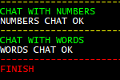

Project sections:
Java source code packages:

 project 'Study26-first', application sources :
kp
project 'Study26-first', application sources :
kp
project 'Study26-first', test sources :
kp
project 'Study26-second', application sources :
kp
project 'Study26-second', test sources :
kp
project 'Study26-third', application sources :
kp
project 'Study26-third', test sources :
kp

 project 'Study26-first' :
Java API Documentation
project 'Study26-first' :
Java API Documentation
project 'Study26-second' :
Java API Documentation
project 'Study26-third' :
Java API Documentation
 1.1. Protocol Buffers are language-neutral, platform-neutral, extensible mechanisms
for serializing structured data. Google Protocol Buffer (protobuf) is a binary data format.
The gRPC API is based on Protocol Buffers, which provides a protoc compiler to generate code.
1.1. Protocol Buffers are language-neutral, platform-neutral, extensible mechanisms
for serializing structured data. Google Protocol Buffer (protobuf) is a binary data format.
The gRPC API is based on Protocol Buffers, which provides a protoc compiler to generate code.
1.2. The Protocol Buffers proto definitions. The Java code is generated from the proto files.
| chat.proto | department.proto |
1.3. Find all departments.
The REST endpoint /departments in the Spring Boot application "First":
The method
kp.controllers.DepartmentController::getDepartments
is the entry point for retrieving all departments. It handles HTTP requests and delegates the retrieval logic to the gRPC client service.
The gRPC client service in the Spring Boot application "First":
The method
kp.services.clients.DepartmentService::getDepartments
uses a gRPC blocking stub to communicate with the department service on the "Second" application, calling its gRPC endpoint to retrieve all departments.
The gRPC server endpoint in the Spring Boot application "Second":
The method
kp.services.servers.DepartmentServiceGrpcImpl::getDepartments
is the gRPC implementation that handles requests from the client, fetches the departments from a service,
and returns them to the client.
The gRPC client service in the Spring Boot application "Second":
The method
kp.services.clients.DepartmentService::getDepartments
fetches departments from the service in the "Third" application.
The gRPC server endpoint in the Spring Boot application "Third":
The method
kp.services.servers.DepartmentServiceGrpcImpl::getDepartments
is the final gRPC server implementation, which stores the list of departments and provides them to upstream callers.
1.4. Find department by id.
The REST endpoint /departments/{id} in the Spring Boot application "First":
The method
kp.controllers.DepartmentController::getDepartmentById
is the entry point for retrieving a department by its id. It delegates the lookup to the gRPC client service.
The gRPC client service in the Spring Boot application "First":
The method
kp.services.clients.DepartmentService::getDepartmentById
sends a gRPC request to the department service on the "Second" application,
requesting a department with the specified id.
The gRPC server endpoint in the Spring Boot application "Second":
The method
kp.services.servers.DepartmentServiceGrpcImpl::getDepartmentById
handles the request, performs the lookup via a service, and returns the department to the client,
or an error if not found.
The gRPC client service in the Spring Boot application "Second":
The method
kp.services.clients.DepartmentService::getDepartmentById
enables the "Second" application to act as a gRPC client itself (e.g., to forward lookups to the "Third" application).
The gRPC server endpoint in the Spring Boot application "Third":
The method
kp.services.servers.DepartmentServiceGrpcImpl::getDepartmentById
is the final backend handler that provides the department details for a given id, or an error if not found.
1.5. Chat services.
gRPC uses the HTTP/2 network protocol. This protocol supports streams.
In these two chat services, bidirectional streaming RPC is implemented,
where both sides send a sequence of messages using a read-write stream.
1.6. Chat with numbers.

The REST endpoint /numbers/{limit} in the Spring Boot application "First":
The method
kp.controllers.ChatController::startNumbersChat
is a REST controller method that acts as the entry point for initiating the numbers chat session.
When this endpoint is called, it triggers the gRPC client logic to start the bidirectional number exchange with the server,
using the provided limit as the upper bound for the exchange.
The service with the gRPC client in the Spring Boot application "First":
The method
kp.services.clients.NumbersChatService::runNumbersChat
is a private helper method that handles the bidirectional number exchange logic with the gRPC server.
It sends and receives numbers using a StreamObserver, incrementing each value until the specified limit is reached.
This method is invoked internally by startNumbersChat(int limit), which acts as the public entry point for initiating the gRPC chat session.
The service with the gRPC server in the Spring Boot application "Second":
The method
kp.services.servers.NumbersChatServiceGrpcImpl::numbersChat
is the public gRPC endpoint that implements the bidirectional streaming RPC.
It returns a StreamObserver for handling incoming NumberNote messages from the client,
incrementing each received number and sending it back to the client.
1.7. Chat with words.

The REST endpoint /words/{limit} in the Spring Boot application "First":
The method
kp.controllers.ChatController::startWordsChat
is a REST controller method that acts as the entry point for initiating the words chat session.
When this endpoint is called, it triggers the gRPC client logic to start the bidirectional word exchange with the server,
using the provided limit as the upper bound for the exchange.
The service with the gRPC client in the Spring Boot application "First":
The method
kp.services.clients.WordsChatServiceGrpcImpl::runWordsChat
is a private helper method that handles the bidirectional word exchange logic with the gRPC server.
It sends and receives words using a StreamObserver, changing each value until the specified limit is reached.
This method is invoked internally by startWordsChat(int limit), which acts as the public entry point for initiating the gRPC chat session.
The service with the gRPC server in the Spring Boot application "Second":
The method
kp.services.servers.WordsChatServiceGrpcImpl::wordsChat
is the public gRPC endpoint that implements the bidirectional streaming RPC.
It returns a StreamObserver for handling incoming WordNote messages from the client,
changing each received word and sending it back to the client.
Action:

 Use the batch file
"01 Docker compose.bat" to build the images and start the containers.
Use the batch file
"01 Docker compose.bat" to build the images and start the containers.
2.1. Docker images are built using the following files:
2.2. The screenshot
shows the created Docker containers.
Action:
1. Start the Windows batch script
"02 CURL on Docker 'departments'.bat".
2. Start the Windows batch script
"03 CURL on Docker 'chat'.bat".
3.1. Testing the "departments" endpoints. The Windows batch script
"departments.bat".
The screenshot shows the results from the batch file "02 CURL on Docker 'departments'.bat".
3.2. Testing the "chat" endpoints. The Windows batch script
"chat.bat".

 The screenshot shows the results from the batch file "03 CURL on Docker 'chat'.bat".
The screenshot shows the results from the batch file "03 CURL on Docker 'chat'.bat".
The screenshot
shows the logs in the Docker container "First".
The screenshot
shows the logs in the Docker container "Second".
Action:
1. Use the batch file
"04 MVN build and start local.bat" to build and
start locally the applications: "First", "Second", and "Third".
2. Start the Windows batch script
"05 CURL local 'departments'.bat".
3. Start the Windows batch script
"06 CURL local 'chat'.bat".
| gRPC | Google Remote Procedure Call |
| IDL | Interface Definition Language |
{kind=link}
{kind=link}
{kind=link}
{kind=link}